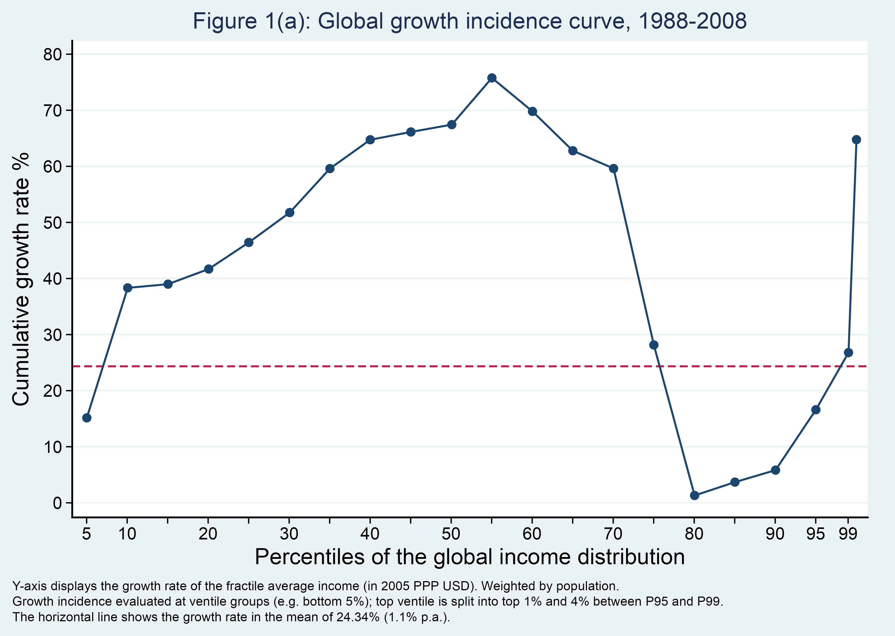

Show the R code
sans <- c(intersect(c("Arial", "Helvetica"), systemfonts::system_fonts()$family), "sans")[1]
navy <- "#1a476f" # Stata s2color's first line colour, sampled off the original
title <- "#1e2d53"
red <- "#c71c47"
ground <- "#eaf2f3"
note <- paste(
"Y-axis displays the growth rate of the fractile average income (in 2005 PPP USD). Weighted by population.",
"Growth incidence evaluated at ventile groups (e.g. bottom 5%); top ventile is split into top 1% and 4% between P95 and P99.",
sprintf("The horizontal line shows the growth rate in the mean of %.2f%% (1.1%% p.a.).", MEAN_GROWTH),
sep = "\n")
recreation <- ggplot(gic, aes(x_plotted, growth_pct)) +
geom_hline(yintercept = MEAN_GROWTH, colour = red, linewidth = .75, linetype = "42") +
geom_line(colour = navy, linewidth = .75) +
geom_point(colour = navy, size = 2.6) +
# Stata's axis: a tick at every fifth percentile and one more at 99, with
# labels on some of them only
scale_x_continuous(breaks = c(seq(5, 95, 5), 99),
labels = \(x) if_else(x %in% c(5, 10, seq(20, 90, 10), 95, 99), as.character(x), ""),
expand = expansion(add = c(1.8, 1.4))) +
scale_y_continuous(breaks = seq(0, 80, 10), limits = c(-2.6, 82.4), expand = c(0, 0)) +
coord_cartesian(clip = "off") +
labs(title = "Figure 1(a): Global growth incidence curve, 1988-2008",
x = "Percentiles of the global income distribution",
y = "Cumulative growth rate %", caption = note) +
theme_classic(base_family = sans, base_size = 15) +
theme(plot.background = element_rect(fill = ground, colour = NA),
panel.background = element_rect(fill = "white", colour = NA),
panel.grid.major.y = element_line(colour = "#eaf2f3", linewidth = .6),
plot.title = element_text(colour = title, hjust = .5, size = 18.5,
margin = margin(b = 6)),
axis.text = element_text(colour = "black", size = 14),
axis.text.y = element_text(hjust = 1),
axis.ticks = element_line(colour = "black", linewidth = .5),
axis.ticks.length = unit(5, "pt"),
axis.title.x = element_text(size = 18, margin = margin(t = 4)),
axis.title.y = element_text(size = 18, margin = margin(r = 8)),
plot.caption = element_text(hjust = 0, size = 10.4, lineheight = 1,
margin = margin(t = 10)),
plot.caption.position = "plot",
plot.margin = margin(10, 22, 10, 10))
recreation